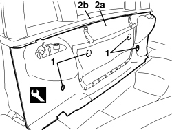

7040C12 HOOD HOUSING COMPARTMENT FRONT TRIM - R.R.
- Path
- Procedures > 70 FITTINGS > 7040 BODY INTERIOR FITTINGS AND TRIM > 7040C HOOD HOUSING COMPARTMENT TRIM - R.R. > 7040C12 HOOD HOUSING COMPARTMENT FRONT TRIM - R.R.
- Kind
- repair procedure (removal / refitting; the operation number is the code)
- Applies to
- engines: 2.2 JTS, 3.2 JTS; all production periods
- Interactive page
- https://sloeber94.github.io/elrnDB-aBrrSpdr/en/#/946004121
Applies to: engines: 2.2 JTS, 3.2 JTS; all production periods
 Removing
Removing
 Refitting
Refitting- Prepare the hood for the operation.
Op. 0010T79 HOOD HYDRAULIC SYSTEM - DISCHARGE AND RESTORE PRESSURE
Op. 7040C11 HOOD HOUSING COMPARTMENT FLOOR TRIM - R.R.
1. Release the retaining buttons using the special tool.
Tool | Description | Function | Validity |
|---|---|---|---|
1823015000 | Knife | Retainer removal |
2. Remove the front trim (2a) releasing it from the upper profile (2b).

Applies to: engines: 2.2 JTS, 3.2 JTS; all production periods
Refitting
Removing- Check that the front trim is not damaged.
- Position the front trim and attach it to the upper profile.
- Attach the retaining buttons.
- If discharged, restore the hood hydraulic system pressure.
Op. 7030H03 HOOD MANUAL OPENING FOLLOWING DEACTIVATION OF HYDRAULIC SYSTEM - CARRY OUT PROCEDURE
Topics linked from this page (3)
- 0010T79 HOOD HYDRAULIC SYSTEM - DISCHARGE AND RESTORE PRESSURE
- 7030H03 HOOD MANUAL OPENING FOLLOWING DEACTIVATION OF HYDRAULIC SYSTEM - CARRY OUT PROCEDURE
- 7040C11 HOOD HOUSING COMPARTMENT FLOOR TRIM - R.R.
Topics that link to this page (7)
- 7025D10 HOOD HOUSING COMPARTMENT COVER - ALIGNMENT
- 7025D16 HOOD HOUSING COMPARTMENT SELF-ADJUSTING BUFFERS - R.R.
- 7025D24 HOOD HOUSING COMPARTMENT COVER LOCK (ONE), LEFT OR RIGHT - R.R.
- 7025D25 HOOD HOUSING COMPARTMENT COVER LOCK CLOSING SENSOR (ONE), LEFT OR RIGHT - R.R.
- 7040H73 ROLL BAR LOWER TRIM - R.R.
- 7055B20 ROLL BAR, LEFT OR RIGHT - R.R.
- 7210B71 BACKREST REAR PARTITION - R.R.